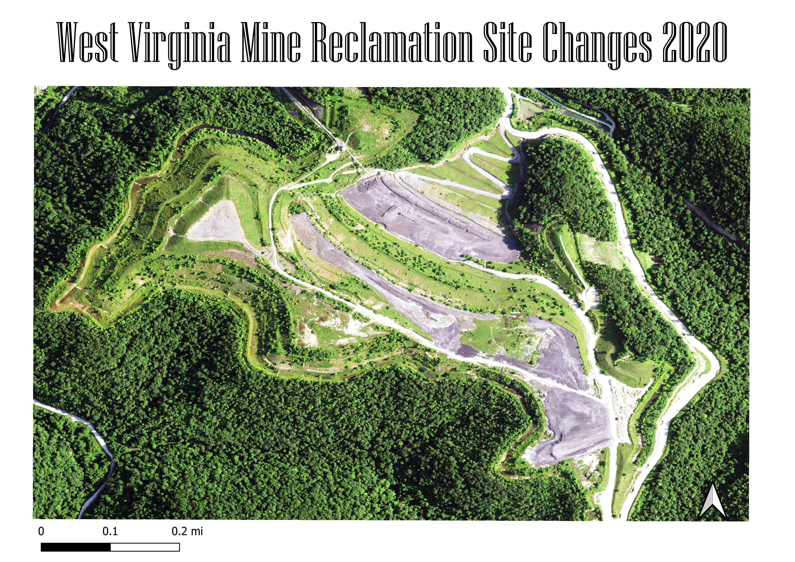
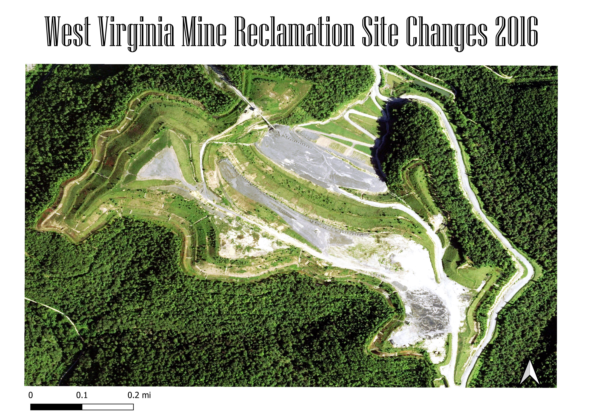

West Virginia is at the forefront of mine reclamation, an environmental movement started to help prevent the negative outcomes associated with coal mining. A federal law mandates that coal companies contribute to restoring the land after mining has conlcuded in order to maintain their land usage. These images show a mining site that was abandoned in the early 2000s, and the progress made to restore the land over the last decade.
Most restoration focuses on diminishing acid mine drainage and soil erosion, which is evident by the concentration on planting tree and increasing the amount of green space as the images progress.
Interestingly, though there is a focus on incerasing the number of plants, the roads are also better maintained as time goes on despite the mine being abandoned. This seems to me that there might be futher use of the land or that this site is a good path to use to get to another site nearby, making it important to keep the roads passable and organized.